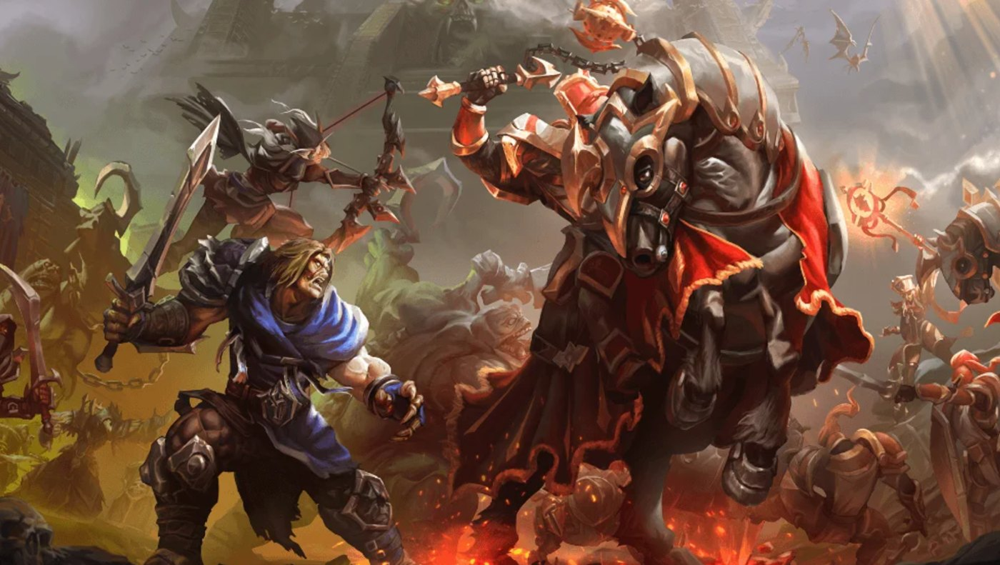

News › Équilibre des factions
Équilibre des factions : création plus difficile dans la faction la plus peuplée
10 novembre 2026
Sur les ensembles de règles JcJ, Blizzard veut se rapprocher d'une répartition 50/50 entre la Horde et l'Alliance.

Ce qui change
- La création de personnage tient désormais compte de l'équilibre des factions dans chaque région.
- Il devient de plus en plus difficile de créer un personnage dans la faction la plus peuplée : la Horde en JcJ aux Amériques, l'Alliance en JcJ Jeu de rôle en Europe.
- Le cas le plus déséquilibré est aujourd'hui de 55/45, ce que l'équipe juge insatisfaisant.
- Il ne s'agit pas d'un blocage total : la création devient simplement plus difficile.
« L'équilibre des factions dans les ensembles de règles JcJ de WoW : Forever est extrêmement important. » – Kaivax
Tu hésites encore entre les deux camps ? Notre comparatif des races et nos fiches de classes, avec les races conseillées en JcE et en JcJ, peuvent t'aider. Et dis-nous dans le sondage de la colonne de droite si tu joues Horde ou Alliance !
Source : JudgeHype (10 novembre 2026), d'après le message de Kaivax sur les forums officiels.